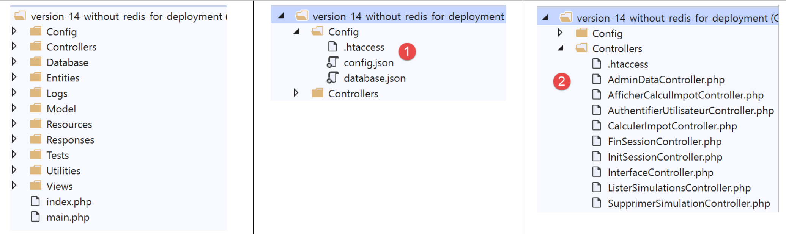

20. Bereitstellung der Client-Server-Anwendung auf einem Hosting-Dienst
Hier geben wir einen Überblick über die Bereitstellung der von uns entwickelten Client-Server-Anwendung auf einem Server mit den Bezeichnungen OVH und [https://www.ovh.com/fr/]. Die Bereitstellung bei anderen Hosting-Anbietern dürfte sich davon nicht wesentlich unterscheiden. Wir möchten lediglich zeigen, dass sich unsere Anwendung gut für diese Art der Bereitstellung eignet.
20.1. Bereitstellung des Servers
Das angestrebte Hosting bei OVH ist ein Basis-Hosting:
- eine PHP 7.3-Umgebung;
- ein SGBD MySQL;
- kein [Redis]-Server;
Der dritte Punkt zwingt uns dazu, die Version 14 unseres Steuerberechnungsservers anzupassen.

Wir müssen folgende Änderungen vornehmen:
- die Konfigurationsdateien [1];
- die Controller [AdminDataController] und [CalculerImpotController], um der Tatsache Rechnung zu tragen, dass es keinen Server [Redis] gibt;
Die Datei [config.json] ändert sich wie folgt:
{
"databaseFilename": "Config/database.json",
"corsAllowed": false,
"redisAvailable":false,
"rootDirectory": "/.../www/apps/impot/serveur-php7",
"relativeDependencies": [
"/Entities/BaseEntity.php",
...
"/Controllers/AdminDataController.php"
],
"absoluteDependencies": [
"/.../vendor/autoload.php",
"/.../vendor/predis/predis/autoload.php"
],
"users": [
{
"login": "admin",
"passwd": "admin"
}
],
...
}
Kommentare
- Zeile 4: Es wird ein boolescher Wert [redisAvailable] eingeführt, um anzugeben, ob Zugriff auf einen Server [Redis] besteht oder nicht;
- Zeilen 5, 13, 14: Die absoluten Pfade ändern sich;
Die Datei [database.json] ändert sich wie folgt:
{
"dsn": "mysql:host=...;dbname=...",
"id": "...",
"pwd": "...",
"tableTranches": "dbimpots_tbtranches",
"colLimites": "limites",
"colCoeffR": "coeffr",
"colCoeffN": "coeffn",
"tableConstantes": "dbimpots_tbconstantes",
"colPlafondQfDemiPart": "plafondQfDemiPart",
...
}
Anmerkungen
- Zeilen 2–4: Die Datenbank-ID sowie die Anmeldedaten des Datenbankbesitzers werden sich ändern;
Der Controller [AdminDataController] ändert sich wie folgt:
<?php
namespace Application;
// Symfony-Abhängigkeiten
use \Symfony\Component\HttpFoundation\Response;
use \Symfony\Component\HttpFoundation\Request;
use \Symfony\Component\HttpFoundation\Session\Session;
// Alias der Schicht [dao]
use \Application\ServerDaoWithSession as ServerDaoWithRedis;
class AdminDataController implements InterfaceController {
// $config ist die Konfiguration der Anwendung
// Verarbeitung einer Anfrage (Request)
// nutzt die Sitzung „Session“ und kann diese ändern
// $infos sind zusätzliche Informationen, die für jeden Controller spezifisch sind
// gibt ein Array zurück: [$statusCode, $état, $content, $headers]
public function execute(
array $config,
Request $request,
Session $session,
array $infos = NULL): array {
// muss einen eindeutigen Parameter enthalten: GET
$method = strtolower($request->getMethod());
...
// man kann damit arbeiten
// Redis
if ($config["redisAvailable"]) {
\Predis\Autoloader::register();
...
} else {
try {
// Wir rufen die Steuerdaten aus der Datenbank ab
$dao = new ServerDaoWithRedis($config["databaseFilename"], NULL);
// taxAdminData
$taxAdminData = $dao->getTaxAdminData();
} catch (\Throwable $ex) {
// Es ist schiefgelaufen
// Ergebnis mit Fehler an den Hauptcontroller zurückgesendet
$état = 1051;
return [Response::HTTP_INTERNAL_SERVER_ERROR, $état,
["réponse" => utf8_encode($ex->getMessage())], []];
}
}
// Ergebnis an den Hauptcontroller zurückgesendet
$état = 1000;
return [Response::HTTP_OK, $état, ["réponse" => $taxAdminData], []];
}
}
Kommentare
- Zeile 31: Es wird nun geprüft, ob ein Server mit der Kennung [Redis] vorhanden ist;
- Zeilen 32–34: Falls ja, wird der vorherige Code vollständig übernommen;
- Zeilen 35–46: Andernfalls werden die Daten der Steuerbehörde aus der Datenbank übernommen;
Der Controller [CalculerImpotController], der ebenfalls Daten der Steuerbehörde benötigt, verhält sich identisch.
Das ist erledigt. Die Bereitstellung auf dem Server OVH bestand darin, FTP zu erstellen. Auf OVH wurde Folgendes heruntergeladen:
- die Version [vuejs-14-without-redis];
- den Ordner [vendor], der alle Abhängigkeiten des Servers [vuejs-14-without-redis] enthält;
Nach Abschluss der Übertragung FTP wurden die für den Server erforderlichen Tabellen mit dem folgenden Skript SQL generiert:
-- phpMyAdmin SQL Dump
-- Version 4.8.5
-- https://www.phpmyadmin.net/
--
-- Host: localhost:3306
-- Erstellungszeit: 12. Oktober 2019 um 07:45 Uhr AM
-- Serverversion: 5.7.24
-- PHP Version: 7.2.11
SET SQL_MODE = "NO_AUTO_VALUE_ON_ZERO";
SET AUTOCOMMIT = 0;
START TRANSACTION;
SET time_zone = "+00:00";
/*!40101 SET @OLD_CHARACTER_SET_CLIENT=@@CHARACTER_SET_CLIENT */;
/*!40101 SET @OLD_CHARACTER_SET_RESULTS=@@CHARACTER_SET_RESULTS */;
/*!40101 SET @OLD_COLLATION_CONNECTION=@@COLLATION_CONNECTION */;
/*!40101 SET NAMES utf8mb4 */;
--
-- Tabellenstruktur für die Tabelle `dbimpots_tbconstantes`
--
CREATE TABLE `dbimpots_tbconstantes` (
`id` int(11) NOT NULL,
`plafondQfDemiPart` decimal(10,2) NOT NULL,
`plafondRevenusCelibatairePourReduction` decimal(10,2) NOT NULL,
`plafondRevenusCouplePourReduction` decimal(10,2) NOT NULL,
`valeurReducDemiPart` decimal(10,2) NOT NULL,
`plafondDecoteCelibataire` decimal(10,2) NOT NULL,
`plafondDecoteCouple` decimal(10,2) NOT NULL,
`plafondImpotCelibatairePourDecote` decimal(10,2) NOT NULL,
`plafondImpotCouplePourDecote` decimal(10,2) NOT NULL,
`abattementDixPourcentMax` decimal(10,2) NOT NULL,
`abattementDixPourcentMin` decimal(10,2) NOT NULL
) ENGINE=InnoDB DEFAULT CHARSET=utf8;
--
-- Datenausgabe für die Tabelle `dbimpots_tbconstantes`
--
INSERT INTO `dbimpots_tbconstantes` (`id`, `plafondQfDemiPart`, `plafondRevenusCelibatairePourReduction`, `plafondRevenusCouplePourReduction`, `valeurReducDemiPart`, `plafondDecoteCelibataire`, `plafondDecoteCouple`, `plafondImpotCelibatairePourDecote`, `plafondImpotCouplePourDecote`, `abattementDixPourcentMax`, `abattementDixPourcentMin`) VALUES
(8, '1551.00', '21037.00', '42074.00', '3797.00', '1196.00', '1970.00', '1595.00', '2627.00', '12502.00', '437.00');
-- --------------------------------------------------------
--
-- Tabellenstruktur für die Tabelle `dbimpots_tbtranches`
--
CREATE TABLE `dbimpots_tbtranches` (
`id` int(11) NOT NULL,
`limites` decimal(10,2) NOT NULL,
`coeffR` decimal(10,2) NOT NULL,
`coeffN` decimal(10,2) NOT NULL
) ENGINE=InnoDB DEFAULT CHARSET=utf8;
--
-- Datenausgabe für die Tabelle `dbimpots_tbtranches`
--
INSERT INTO `dbimpots_tbtranches` (`id`, `limites`, `coeffR`, `coeffN`) VALUES
(36, '9964.00', '0.00', '0.00'),
(37, '27519.00', '0.14', '1394.96'),
(38, '73779.00', '0.30', '5798.00'),
(39, '156244.00', '0.41', '13913.69'),
(40, '0.00', '0.45', '20163.45');
--
-- Indizes für die gesicherten Tabellen
--
--
-- Indizes für die Tabelle `dbimpots_tbconstantes`
--
ALTER TABLE `dbimpots_tbconstantes`
ADD PRIMARY KEY (`id`);
--
-- Indizes für die Tabelle `dbimpots_tbtranches`
--
ALTER TABLE `dbimpots_tbtranches`
ADD PRIMARY KEY (`id`);
--
-- AUTO_INCREMENT für gesicherte Tabellen
--
--
-- AUTO_INCREMENT für die Tabelle `dbimpots_tbconstantes`
--
ALTER TABLE `dbimpots_tbconstantes`
MODIFY `id` int(11) NOT NULL AUTO_INCREMENT, AUTO_INCREMENT=9;
--
-- AUTO_INCREMENT für die Tabelle `dbimpots_tbtranches`
--
ALTER TABLE `dbimpots_tbtranches`
MODIFY `id` int(11) NOT NULL AUTO_INCREMENT, AUTO_INCREMENT=41;
COMMIT;
/*!40101 SET CHARACTER_SET_CLIENT=@OLD_CHARACTER_SET_CLIENT */;
/*!40101 SET CHARACTER_SET_RESULTS=@OLD_CHARACTER_SET_RESULTS */;
/*!40101 SET COLLATION_CONNECTION=@OLD_COLLATION_CONNECTION */;
Nachdem all dies erledigt war, wurden die Dateien [config.json, database.json] an ihre neue Umgebung angepasst.
20.2. Bereitstellung des Clients [Vue.js]
Es wurde beschlossen, den Client [Vue.js] auf URL und [http://machine/apps/impot/client-vuejs/] bereitzustellen. Dies führte zu folgenden Änderungen:
Im Stammverzeichnis von [workspace] wurde unter [VSCode] die folgende Datei [vue.config.js] angelegt:

Die Datei [vue.config.js] lautet wie folgt:
// vue.config.js
module.exports = {
// der Kundendienst-URL des Steuerberechnungsservers [vuejs]
publicPath: '/apps/impot/client-vuejs/'
}
Die Datei [router.js] [3] wurde ebenfalls geändert:
// Importe
import Vue from 'vue'
import VueRouter from 'vue-router'
...
// Routing-Plugin
Vue.use(VueRouter)
// Anwendungsrouten
const routes = [
...
]
// Router
const router = new VueRouter({
// Routen
routes,
// Anzeigemodus von URL
mode: 'history',
// die Basis-URL der Anwendung
base: '/apps/impot/client-vuejs/'
})
// Überprüfung der Routen
router.beforeEach((to, from, next) => {
...
})
// Export des Routers
export default router
Anmerkungen
- Zeile 21: Die Basis der Datei „URL“ wurde geändert;
Die Datei [config.js] wurde wie folgt geändert:
// Verwendung der Bibliothek [axios]
const axios = require('axios');
// Zeitlimit für Anfragen an HTTP
axios.defaults.timeout = 5000;
// Die Datenbank des Steuerberechnungsservers URL
// Das Schema [https] verursacht Probleme in Firefox, da der Server
// ein selbstsigniertes Zertifikat sendet. Mit Chrome und Edge funktioniert es einwandfrei. Safari wurde nicht getestet.
// Mit Firefox ist es möglich, indem man die unten stehende URL direkt aufruft und Firefox mitteilt
// mitzuteilen, dass Sie das Risiko eines nicht signierten Zertifikats akzeptieren. Dann funktioniert der Client [vuejs].
axios.defaults.baseURL = 'http://.../apps/impot/serveur-php7';
// Wir werden Cookies verwenden
axios.defaults.withCredentials = true;
// Konfiguration exportieren
export default {
// Objekt [axios]
axios: axios,
// Maximale Inaktivitätsdauer der Sitzung: 5 Min. = 300 s = 300000 ms
duréeSession: 300000
}
Kommentare
- Zeile 10: Die Datei „URL“ wird vom Steuerberechnungsserver übernommen;
Die Produktionsversion des Projekts wurde mit dem Befehl [build] aus der folgenden Datei [package.json] [5] generiert:
{
"name": "vuejs",
"version": "0.1.0",
"private": true,
"scripts": {
"serve": "vue-cli-service serve vuejs-22/main.js",
"build": "vue-cli-service build vuejs-22-ovh-withBootstrapVue/main.js",
"lint": "vue-cli-service lint"
},
...
}
Anschließend wurde der Ordner [dist], der die generierte Produktionsversion enthielt, auf den Server OVH in den Ordner [/.../apps/impot] hochgeladen und anschließend in [client-vuejs] umbenannt, damit sich der Code des Kunden wie vorgesehen im Ordner [/.../apps/impot/client-vuejs/] befindet. Anschließend haben wir in diesen Ordner die folgende Datei „[.htaccess]“ hochgeladen:
<IfModule mod_rewrite.c>
RewriteEngine On
RewriteBase /apps/impot/client-vuejs/
RewriteRule ^index\.html$ - [L]
RewriteCond %{REQUEST_FILENAME} !-f
RewriteCond %{REQUEST_FILENAME} !-d
RewriteRule . /apps/impot/client-vuejs/index.html [L]
</IfModule>
Dies liegt daran, dass der hier verwendete Webserver von OVH ein Apache-Server ist. Für andere Servertypen siehe die Dokumentation |https://cli.vuejs.org/guide/deployment.html|.
Die Serveranwendung PHP 7 kann |hier| getestet werden.
Der Client [Vue.js] kann |hier| getestet werden.
20.3. Conclusion
Die Version [vuejs-21] war nicht unbedingt erforderlich. Es hatte sich gezeigt, dass die Version [vuejs-20] den vom Benutzer eingegebenen URL korrekt widerstand. Dennoch bietet die neue Version dem Benutzer zusätzlichen Komfort. Er kann durch Eingabe von URL navigieren. Die Anwendung schlägt ihm dann die Ansicht vor, die am besten zum aktuellen Zustand (der Sitzung) der Anwendung passt. Darüber hinaus bringt die Version [vuejs-22] Verbesserungen für die Darstellung der Anwendung auf Mobilgeräten mit sich.